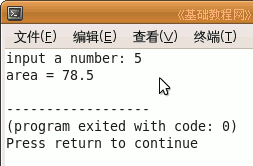

C++ 编程基础教程
作者：TeliuTe 来源：基础教程网
函数是 c ++ 程序的基本单元，如果程序是一个工厂，函数就像一个生产车间，输送进去原料，出来的是产品，下面我们来看一个练习；
1、启动 Geany
1）点菜单“应用程序－编程－Geany”启动 Geany ，新建一个 c++ 源程序；
2）点菜单“文件－另存为”命令，以“FUNC”为文件名，保存文件到自己的文件夹；
2、函数的用途
1）调用函数可以得到一个运算结果，下面看一个求圆的面积的函数，输入半径得到面积；
2）先声明要用到一个函数，在主函数 main 前面加一行 float area (int r) ；
|
#include <iostream> using namespace std; float area(int r); int main(int argc, char** argv) |
3）第一个 float 指明函数类型是是浮点类型，也就是运算结果是小数，第二个括号里的 int 指明参数是整型；
4）接着在主函数的后面，输入函数的定义，也就是定义函数体，这个函数跟主函数是相互独立的；
|
int main(int argc, char** argv) { return 0; } float area(int r) { float pi = 3.14; float s = 0; s = pi * r * r; return s; } |
4）括号里的 int r 叫“形参”变量，只能用在这个函数体里，用来存放主函数传来的数据，
里面的 float pi, s 都叫局部变量，也是只能在这个函数体里使用，
最后一句 return s 是返回运算结果，即 area() 函数的值，
这个值也是存在一个临时变量里，用完后系统会自动结束这些形参、局部、临时变量的生命期；
5）接下来在主函数中调用 area() 函数，像套公式一样，把变量 a 代入到形参中，
主函数 main() 本身也是一个函数，它是一个特殊的函数，每个程序都需要一个主函数，并且从这个主函数开始执行：
|
int main(int argc, char** argv) { int a = 0; cout << "input a number: "; cin >> a; cout << "area = "; cout << area(a); return 0; } |
6）保存、编译、生成、运行，出来提示，输入一个数，得到显示结果；

|
#include <iostream> using namespace std; float area(int r); //函数声明 int main(int argc, char** argv) //主函数 { int a = 0; cout << "input a number: "; cin >> a; cout << "area = "; cout << area(a); return 0; } float area(int r) //函数定义 { float pi = 3.14; float s = 0; s = pi * r * r; return s; } |
本节学习了使用函数的基本操作，如果你成功地完成了练习，请继续学习下一课内容；
本教程由86团学校TeliuTe制作|著作权所有
基础教程网：http://teliute.org/
美丽的校园……
转载和引用本站内容，请保留版权信息和本站链接。